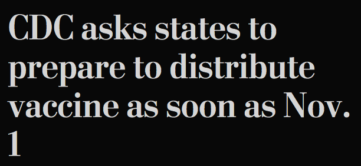

Your word processor assumes that a word space marks a safe place to flow text onto a new line or page. A nonbreaking space is the same width as a word space, but it prevents the text from flowing to a new line or page. It’s like invisible glue between the words on either side.
| Word | Pages | HTML | |
|---|---|---|---|
| nonbreaking space | control (option on Mac) + shift + space bar | option + space bar | |
Put a nonbreaking space before any numeric or alphabetic reference to prevent awkward breaks. Recall this example from paragraph and section marks:
1782, offer a full refund to buyers. But ¶ 49 of the contract offers another option. | |
§ 1782, offer a full refund to buyers. But ¶ 49 of the contract offers another option. |
In the top example, normal word spaces come after the § and ¶ symbols, and the numeric references incorrectly appear on the next line.
In the bottom example, nonbreaking spaces come after the § and ¶ symbols. This time, the symbols and the numeric references stay together.
An example ripped from the headlines:

Also use a nonbreaking space after other abbreviated reference marks
Nonbreaking spaces can be inserted into HTML documents either with an escape code ( ) or by typing a nonbreaking space character (using whatever key shortcut is assigned to it in your text editor).
If you believe in the principle that source code should be optimized for readability—I do—then you should use the escape code, as it makes the nonbreaking space visible and explicit.
Why isn’t there a standard key shortcut for the nonbreaking space? Beats me.
Unlike other white space in HTML, a sequence of nonbreaking spaces is not collapsed into a single word space. So theoretically, you can make larger spaces out of nonbreaking spaces. But as with any white-space characters, this is bad policy—like fixing a flat tire with duct tape.